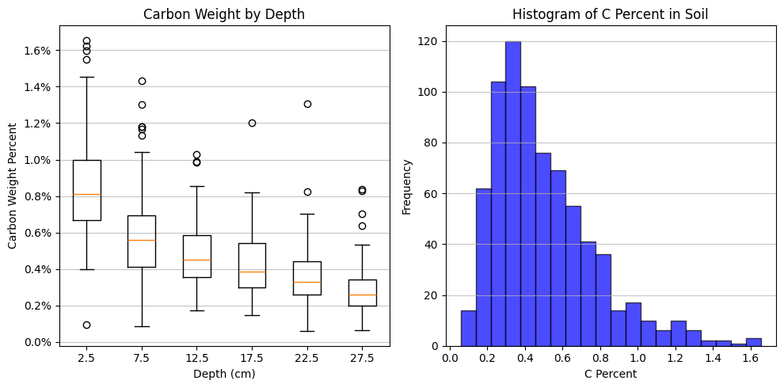
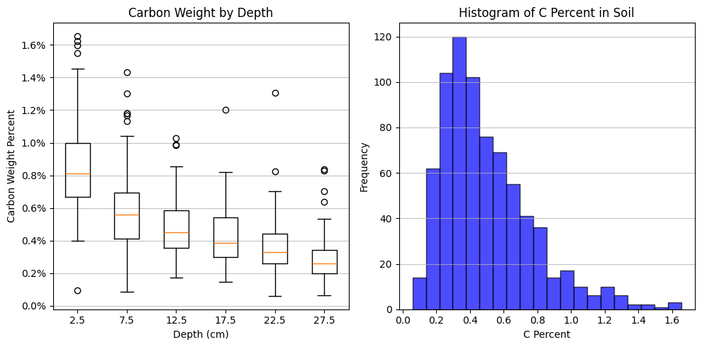
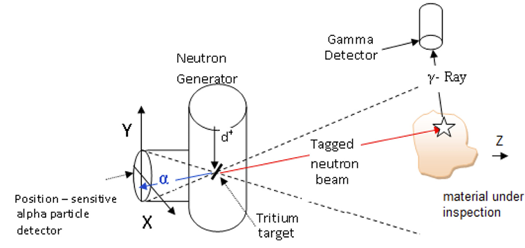
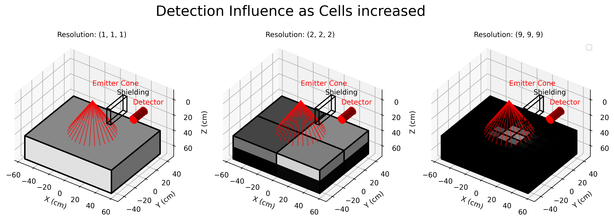
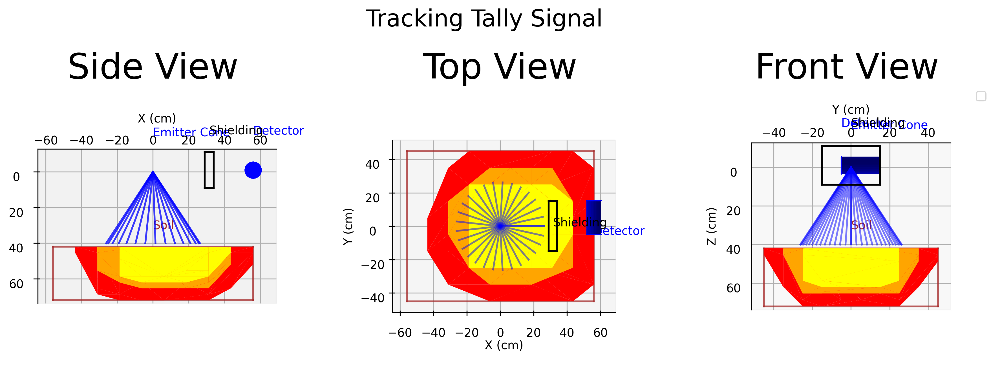

Presenter: Jose Andres Cortes Advisors: Andrej Korzeniowski, Allen Torbert, Galina Yakubova and Aleksandr Kavetskiy Groups: UTA Mathematics, USDA Agriculture Research Service Date: July 8, 2025
Good Morning, My name is Jose Andres Cortes. I'm a second year grad student in mathematics from the University of Texas at Arlington. I am also an intern for the US Department of Agriculture. My advisors are doctors Andrej Korzeniowski, Allen Torbert, Galina Yakubova and Aleksandr Kavetskiy.
For the last two years my advisor and I have collaborated with the USDA Agriculture Research Service, assisting them in the development of an in situ spectroscopy device.

Currently the method of measuring carbon in a field is "Core Harvesting". Core harvesting is where large tubes called "cores" are dug into the soil and taken to a lab for analysis.

In situ spectroscopy is a fast, nondestructive, and cheap alternative to core harvesting. Called the "Mobile Inelastic Neutron Scattering System". This device uses gamma ray spectroscopy in order to measure soil composition directly on the soil.
As an intern I have ben tasked with mathematical support of the project. This includes analysis of the the spectroscopy results and also the generation of spectroscopy results in simulation.Simulation is done in MCNP6.2 and today i will be presenting some challenges that I answered with the software.
 

In MCNP, cells are used to define geometry and material properties.But it assumes that a cells material is homogeneous within the cell.In reality, soil is heterogeneous, with varying properties at different scales. This can be true over whole fields, but even within the range of detection, carbon content can be varied. Particularly in depth, where most of the carbon that is deposited can be modeled as exponentially decreasing.

Mathematically we can describe the soil characteristics with a function dependent on 3 dimensional space. I needed a method to translate this description into MCNP.

Instead of modeling the soil as a single cell, we can cut it into a mesh of smaller cells, from here we can approximate functional characteristics into discrete space. We start with a function describing relevant soil characteristics that are varied spatially. We then describe the geometry of the sample. The geometry is cut into sections of an arbitrary resolution. The higher the resolution, the more accurate the results would be to the functional description.

in each section, we use monte carlo to randomly and uniformly pick many points inside the volume to find the average characteristic. The average characteristics are then set as the defenition of the section. Mesh cells create a more detailed representation of the soil sample. This allows for more accurate modeling of the interaction between the radiation and the soil, leading to better predictions of spectral readings.

Here, we begin with a homogeneous cell, which is then cut into a mesh of smaller cells. As we increase he resolution of the method, the discrete characterisic of carbon density approahes the functional. We can see the effects on spectral readings. This imples that the readings are heavily dependent on proximity.


One of the focuses of my work has been on the range of the machine. In lab spectroscopy, the detector can be situated such that the entire sample is within range. On the field, soil is semi-infinite but the probing done by the detection system is still finite.
So how can you measure range in MCNP? The FMESH feature allows you to tally based on a predefined mesh that cuts a cell into sections, becoming bins in a tally. This feature is meant for imaging on the detector side, and can also be used to investigate the range from the neutron source into the sample. Similarly, cell meshes can have tallies applied to them, accomplishing the same thing as FMESH.

The added functionality on top of this is the treatment of the cell mesh as independent cells. The CU card bins a tally based on the cell where the interacting particle was generated. By setting the parameters of the CU card to the cells in the mesh, we can investigate where the detectors are detecting.

We can order the cells by their detection ratios, and get a better grasp of where the top 90, 95 and 99% of unimpeded signal is originating.

Figure: Comparison of homogeneous vs. meshed cell with same measured carbon content
In this example I measure the heating deposition into the detector, binned by mesh cells. I take the weighted sum of tallies per bin. Relatively, i use these values to describe the proportional effect on the detector result. Lets compare the spectral readings and range of a homogeneous cell with a cell mesh with the same amount of measured carbon.
Moving forward, when the architecture of the machine is changed and the detection results are simulated, range can also be determined. In this example, as we point the emmiter under the detector, we see the effects on the range.
Examples and a tool for cell and tally generation can be found on my github
Thanks to my advisors for guiding me through this process. Thank you to UTA and USDA-ARS for funding my research
[^1] - Yakubova et al. - 2014 - Field Testing a Mobile Inelastic Neutron Scattering System to Measure Soil Carbon.